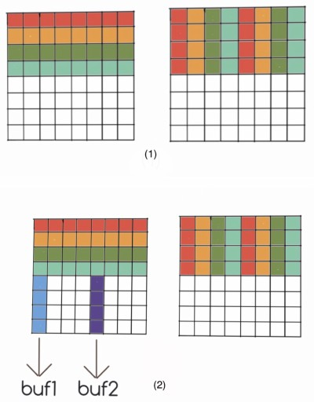
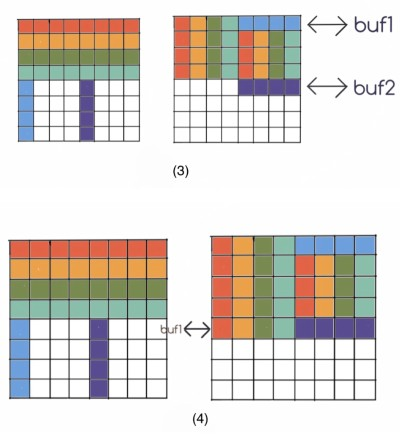

我最开始觉得这个实验就是写一个缓存模拟器和利用缓存优化代码，应该挺简单的。结果发现，这个实验设计得真的很好，并没用那么简单。所以，赶紧写篇文章记录自己的实验。
Part A 是写一个缓存的模拟器，相对而言比较简单，我这里就不记录 Part A 了。Part B 是根据缓存的特性来优化矩阵转置的代码，这应该是这个实验最有意思的一部分，看似很简单，但是要优化到满分难道不小。并且，Part B 中对缓存是否命中的定量分析也是很有趣的。
[TOC]
实验介绍
Part B 是根据缓存的特性优化矩阵转置，目标是 miss 次数尽量的小。
输入是三个不同的固定大小的矩阵，矩阵分别为：
- 32 x 32，miss 次数小于 300 满分。
- 64 x 64，miss 次数小于 1300 满分。
- 61 x 67， miss 次数小于 2000 满分。
可以根据矩阵的大小做特定的优化。实验还有如下限制：
- 最多 12 个
int类型的本地变量，不能用其他整数类型来储存int类型的值。 - 不能修改
A矩阵的内容，B矩阵可随意。 - 不能用
malloc类函数。
用来测试 miss 的是 Part A 的缓存模拟器，缓存的参数为 s=5, E=1, b=5， 即共有 32 个 set， 每个 set 有一个 cache line( 直接映射 ), 每个块的大小为 32 bytes。
思路：分块
CSAPP 书上有介绍矩阵乘法的优化，里面就用到了分块的思路。我们这里也要使用分块的思路来优化矩阵转置。那么为什么分块会对缓存更加友好呢？
我们可以先看一下最简单的转置实现：
void trans(int M, int N, int A[N][M], int B[M][N]) {
int i, j, tmp;
for (i = 0; i < N; i++) {
for (j = 0; j < M; j++) {
tmp = A[i][j];
B[j][i] = tmp;
}
}
}这里我们会按行优先读取 A 矩阵，然后一列一列地写入 B 矩阵。在 C 语言，多维数组在内存中是逐行逐行地排列的。也就是说，每一行的内容是在同一块连续内存中的，并且相邻行的内存块的地址是连续的。缓存每次会从内存中加载固定大小的内存块。例如，程序在从内存读 A[0][0] 的时候，除了 A[0][0] 被加载到缓存中，它之后的 A[0][1], A[0][2]... 也可能被加载进缓存。
这里程序逐行地读取 A 矩阵的内容对缓存是友好的。但是内容写入 B 矩阵的时候是一列一列地写入，在列上相邻的元素很有可能不在一个内存块上，这样每次写入都不能命中缓存，需要从内存中加载待写入的部分。缓存的大小是很有限的，一列写完后，再返回第一行的下一列的时候原来在缓存中的内容可能也被替换了，又要重新再从内存中读。所以，最坏的情况下，每次写入内容到 B 矩阵都需要读内存。
矩阵 B 按列写的过程， * 表示内容加载到了缓存中。
假设每个缓存块的大小为 4 个 int 的大小，B 矩阵每相隔四行的行地址在缓存中的 index 会重复一次。
也就是说第一行的前四个元素和第五行的前四个元素会占据相同的缓存块。
| | |
V V V
+-+-+-+-+-+-+-+-+ +-+-+-+-+-+-+-+-+ +-+-+-+-+-+-+-+-+
|*|*|*|*| | | | | | | | | | | | | | |*|*|*|*| | | | |
+-+-+-+-+-+-+-+-+ +-+-+-+-+-+-+-+-+ +-+-+-+-+-+-+-+-+
|*|*|*|*| | | | | | | | | | | | | | |*|*|*|*| | | | |
+-+-+-+-+-+-+-+-+ +-+-+-+-+-+-+-+-+ +-+-+-+-+-+-+-+-+
|*|*|*|*| | | | | | | | | | | | | | |*|*|*|*| | | | |
+-+-+-+-+-+-+-+-+ +-+-+-+-+-+-+-+-+ +-+-+-+-+-+-+-+-+
|*|*|*|*| | | | | => | | | | | | | | | => |*|*|*|*| | | | |
+-+-+-+-+-+-+-+-+ +-+-+-+-+-+-+-+-+ +-+-+-+-+-+-+-+-+
| | | | | | | | | |*|*|*|*| | | | | | | | | | | | | |
+-+-+-+-+-+-+-+-+ +-+-+-+-+-+-+-+-+ +-+-+-+-+-+-+-+-+
| | | | | | | | | |*|*|*|*| | | | | | | | | | | | | |
+-+-+-+-+-+-+-+-+ +-+-+-+-+-+-+-+-+ +-+-+-+-+-+-+-+-+
| | | | | | | | | |*|*|*|*| | | | | | | | | | | | | |
+-+-+-+-+-+-+-+-+ +-+-+-+-+-+-+-+-+ +-+-+-+-+-+-+-+-+
| | | | | | | | | |*|*|*|*| | | | | | | | | | | | | |
+-+-+-+-+-+-+-+-+ +-+-+-+-+-+-+-+-+ +-+-+-+-+-+-+-+-+
(1) (2) (3)
(1) 写入第一列的前四行
(2) 写入第一列后四行时，前四行缓存的内容被替换
(3) 写入第二列的时候，又需要重新从内存中读前四行的内容分块的思路就是我们限制每次写入 B 矩阵的行数，充分利用 B 矩阵在缓存中的部分。比如在上面的例子中，我们可以把分块限制为 4 x 4 的大小，充分利用已经加载到缓存中的内容。
| |
V V
+-+-+-+-+-+-+-+-+ +-+-+-+-+-+-+-+-+
|*|*|*|*| | | | | |*|*|*|*| | | | |
+-+-+-+-+-+-+-+-+ +-+-+-+-+-+-+-+-+
|*|*|*|*| | | | | |*|*|*|*| | | | |
+-+-+-+-+-+-+-+-+ +-+-+-+-+-+-+-+-+
|*|*|*|*| | | | | |*|*|*|*| | | | |
+-+-+-+-+-+-+-+-+ +-+-+-+-+-+-+-+-+
|*|*|*|*| | | | | => |*|*|*|*| | | | |
+-+-+-+-+-+-+-+-+ +-+-+-+-+-+-+-+-+
| | | | | | | | | | | | | | | | | |
+-+-+-+-+-+-+-+-+ +-+-+-+-+-+-+-+-+
| | | | | | | | | | | | | | | | | |
+-+-+-+-+-+-+-+-+ +-+-+-+-+-+-+-+-+
| | | | | | | | | | | | | | | | | |
+-+-+-+-+-+-+-+-+ +-+-+-+-+-+-+-+-+
| | | | | | | | | | | | | | | | | |
+-+-+-+-+-+-+-+-+ +-+-+-+-+-+-+-+-+
(1) (2)
(1) 先写入第一列的前四行，前四列的前四行都被加载到缓存中
(2) 再写入第二列的前四行，不需要再从内存中重新加载A 矩阵也会以同样的方式按照一个块读取内容，同样对缓存是友好的。
总的来说，分块解决的是在矩阵转置过程中，两个矩阵的内存的访问顺序不同导致的缓存不友好的问题，减少了同一个矩阵内部缓存块相互替换的问题。
32 x 32
缓存块的大小为 32 bytes，可以存 8 个 int 类型的数据，那么矩阵每行需要 4 个缓存块。缓存块的总数是 32 个，那么相隔 8 行矩阵的行开始的缓存块的 index 就会重复。
矩阵中缓存块 `index` 的分布：
+--+--+--+--+
0 | 0| 1| 2| 3|
+--+--+--+--+
1 | 4| 5| 6| 7|
+--+--+--+--+
2 | 8| 9|10|11|
+--+--+--+--+
3 |12|13|14|15|
+--+--+--+--+
4 |16|17|18|19|
+--+--+--+--+
5 |20|21|22|23|
+--+--+--+--+
6 |24|25|26|27|
+--+--+--+--+
7 |28|29|30|31|
+--+--+--+--+
8 | 0| 1| 2| 3|
+--+--+--+--+
...
每一个小格子表示一个缓存块，格子中的数字是缓存块的 index。
可以看到第 0 行和第 8 行缓存块的 index 是重复的。为了使得同一个矩阵的在缓存中的内容不被相互替换，我们可以把分块的大小设为 8 x 8。
普通分块
实现
我们先直接按照 8 x 8 分块实现一个矩阵的转置：
for (i = 0; i < N; i += 8) {
for (j = 0; j < M; j += 8) {
// 分块
for (k = i; k < min(i + 8, N); k++) {
for (s = j; s < min(j + 8, M); s++) {
B[s][k] = A[k][s];
}
}
}
}结果分析
在正式测试 miss 之前，我们先人工分析一下 miss 的次数：
每个分块的大小为 8 x 8， 所以每个块的 miss 次数是 8。每个矩阵有 16 个分块，有两个矩阵，所以总的 miss 次数就是 8*16*2=256。
测试一下：
$ ./test-trans -M 32 -N 32
Function 2 (4 total)
Step 1: Validating and generating memory traces
Step 2: Evaluating performance (s=5, E=1, b=5)
func 2 (8x8 block): hits:1710, misses:343, evictions:311测试结果 miss 的次数是 343，和我们的分析相差很大，也没有达到满分的要求。
我们前面的分析漏掉了什么呢？我了调整代码，输出了 A，B 矩阵在内存中的地址：
A:55ed51a670a0, B:55ed51aa70a0我们可以看到 A，B 的地址最后 16 bits 都是相同的，而缓存的 index 是由倒数 5 到 10 的 bit 组成，所以 A，B 在缓存中的内容会冲突。因为 A， B 是互为转置，所以冲突 A， B 只会发生在矩阵对角线上的块。
我们来分析一下对角线上缓存块的冲突。我用 A[n] 表示第 n 的缓存块， A[n][m] 表示第 n 个缓存块上的第 m 个元素。
首先 A， B 固定的 miss 为 16。
在对角线元素复制时 B[m][m] = A[m][m]， 会发生 A[m]，B[m] 之间的冲突。复制前， A[m] 开始在缓存中，B[m] 不在。 复制时， A[m] 被 B[m] 取代。 下一个开始复制 A[m] 又被重新加载进入缓存取代 B[m]。这样就会产生 2 次多余的 miss。
最后一行和第一行情况有些不一样： 第一行 B[m] 被加载到缓存中是第一次，应该算在那 16 次中， 但是同样会发生 A[0] 的重新加载， 所以额外产生的 miss 次数为 1。 最后一行 A[7] 被取代， 但是复制已经完成，不需要再将 A[7] 加载进内存，所以额外的 miss 也为 1。
B[m] 被 A[m] 取代， 在下一行 A[m+1] 复制时需要重新加载 B[m] 进入缓存 ( 第一行除外 )， 所以会除了第一行每行又多了一次 miss。 所有总的额外的 miss 的数目为 2*6+1*2+7=21。
加上固定的 miss 次数， 对角块上的总的 miss 次数为 37 次。
具体的过程：
缓存中的内容 :
+-----------------------+-------------------+
| opt | cache |
+-----------------------+-------------------+
|before B[0][0]=tmp | A[0] |---+
+-----------------------+-------------------+ |
|after B[0][0]=tmp | B[0] | |
+-----------------------+-------------------+ | A 的第一行复制到 B 的第一列 .
|after tmp=A[0][1] | A[0] | | 最终缓存中剩下 A[0], B[1]...B[7].
+-----------------------+-------------------+ +--> A[0]被两次加载进入内存 ,
|after B[1][0]=tmp | A[0] B[1] | | 总的 miss 次数是 10.
+-----------------------+-------------------+ |
|... | | |
+-----------------------+-------------------+ |
|after B[7][0]=tmp | A[0] B[1..7] |---+
+-----------------------+-------------------+
|after B[0][1]=tmp | A[1] B[0] B[2..7] |---+
+-----------------------+-------------------+ | A 的第二行复制到 B 的的二列 .
|after B[1][1]=tmp | B[0..7] | | 其中发生的 miss 有 :
+-----------------------+-------------------+ +--> A[0], B[0], A[1]与 B[1]的相互取代 .
|... | | | 总的 miss 次数为 4.
+-----------------------+-------------------+ |
|after B[7][1]=tmp | A[1] B[0] B[2..] |---+
+-----------------------+-------------------+ 之后的三至七行与第二行类似 ,
|... | |------> miss 的次数都是 4.
+-----------------------+-------------------+
|after tmp=A[7][7] | A[7] B[0..6] |---+ 最后一行 A[7]被 A[8]取代后 ,
+-----------------------+-------------------+ +--> 不需要重新加载 .
|after B[7][7]=tmp | B[0..7] |---+ 总的 miss 数为 3.
+-----------------------+-------------------+
所以对角块上的总的 miss 次数是 10+4*6+3=37.对角分块有 4 个，普通的分块 12 个，所以总的 miss 数是 4*37+16*12=340，和实际结果相差 3。3 是一个固定的偏差，程序可能在这个过程中有三次额外的内存访问，在后面的根据算法定量分析结果和实际结果中都会有 3 次 miss 的偏差。
缓存分块
实现
上面那种普通分块的实现会在对角块上产生太多的冲突，Ａ，Ｂ 矩阵的缓存块相互替换的情况太多。我们可以考虑使用本地变量存下 Ａ 的一行后，再复制给 Ｂ，即用本地变量作为缓存存储每个缓存块中的内容。本地变量数目不多的时候是放在寄存器上的，因此可以减少访问内存。
for (i = 0; i < 32; i += 8) {
for (j = 0; j < 32; j += 8) {
for (k = i; k < i + 8; k++) {
a0 = A[k][j];
a1 = A[k][j + 1];
a2 = A[k][j + 2];
a3 = A[k][j + 3];
a4 = A[k][j + 4];
a5 = A[k][j + 5];
a6 = A[k][j + 6];
a7 = A[k][j + 7];
B[j][k] = a0;
B[j + 1][k] = a1;
B[j + 2][k] = a2;
B[j + 3][k] = a3;
B[j + 4][k] = a4;
B[j + 5][k] = a5;
B[j + 6][k] = a6;
B[j + 7][k] = a7;
}
}
}结果分析
同样我们先来分析一下 miss 的次数。非对角线的分块没有 A， B 之间的冲突，miss 次数是 16。
对于对角线上的分块，复制 A[m] 时会取代 B[m]( 第一行除外 )，将数据写入 B[m] 的时候又会重新加载一次。所以，额外的 miss 次数为 7 次。对角块总的 miss 次数为 23 次。
总的 miss 次数应该为 23*4+16*12=284 次。
测试一下：
$ ./test-trans -M32 -N32
Function 0 (4 total)
Step 1: Validating and generating memory traces
Step 2: Evaluating performance (s=5, E=1, b=5)
func 0 (Transpose submission): hits:1766, misses:287, evictions:255实际的 miss 次数为 287，和我们分析的刚好相差 3 次。
对角线优先复制
实现
这个思路来自于别人的一篇博客1。思路大概是这样：A 矩阵按列优先读，B 矩阵按照行优先写，优先处理每个分块对角线上的元素。对于 B[m] 行，因为把它加载到缓存中会取代 A[m], 而 A[m] 中需要复制到 B[m] 中的是 A[m][m]。我们通过可以优先复制 A[m][m] 来避免 A，B 之间的这次冲突。
这个思路通过改变数据复制的顺序，巧妙地减少了两个矩阵之间的缓存冲突。
for (i = 0; i < N; i += 8)
for (j = 0; j < M; j += 8)
for (k = 0; k < 8; k++) {
for (s = k; s < 8; s++)
B[k + j][s + i] = A[i + s][j + k];
for (s = k - 1; s >= 0; s--)
B[k + j][s + i] = A[i + s][j + k];
}结果分析
复制 B[m] 行的时候，A[m] 被替换，下一行复制的时候又需要将 A[m] 加载到缓存中。所以 miss 的次数和上面的实现一样，284 次。
测试结果：
$ ./test-trans -M32 -N32
Function 3 (4 total)
Step 1: Validating and generating memory traces
Step 2: Evaluating performance (s=5, E=1, b=5)
func 3 (diagonal first): hits:1766, misses:287, evictions:255实际 miss 次数为 287，和分析结果相差 3。
先复制后转置
实现
前面提到的思路里 , 在对角线的分块处都无可避免的会产生 A, B 矩阵之间的缓存冲突。这个冲突真的不可避免吗？答案是否定的。实验要求上写了不能改变 A 矩阵，但是 B 可以随意处理。我们可以考虑在 B 矩阵上想点办法来消除两个矩阵之间的冲突。
前面提到的两个实现中对角线分块的冲突产生的原因是 A，B 矩阵访问的顺序不同，一个按列访问，一个按行访问，导致的。交叉的访问顺序无可避免地会导致缓存 index 相同的块替换。
为了消除两个矩阵之间的缓存冲突，在把 A 中分块的内容复制到 B 的时候，我们按照都行优先访问顺序访问两个矩阵。这样的结果是，对应分块的内容相同，没有转置。我们在分块复制完成后，再在 B 分块里面完成转置。
const int len = 8;
for (i = 0; i < N; i += len) {
for (j = 0; j < N; j += len) {
// copy
for (k = i, s = j; k < i + len; k++, s++) {
a0 = A[k][j];
a1 = A[k][j + 1];
a2 = A[k][j + 2];
a3 = A[k][j + 3];
a4 = A[k][j + 4];
a5 = A[k][j + 5];
a6 = A[k][j + 6];
a7 = A[k][j + 7];
B[s][i] = a0;
B[s][i + 1] = a1;
B[s][i + 2] = a2;
B[s][i + 3] = a3;
B[s][i + 4] = a4;
B[s][i + 5] = a5;
B[s][i + 6] = a6;
B[s][i + 7] = a7;
}
// transpose
for (k = 0; k < len; k++) {
for (s = k + 1; s < len; s++) {
a0 = B[k + j][s + i];
B[k + j][s + i] = B[s + j][k + i];
B[s + j][k + i] = a0;
}
}
}
}为了消除对角线上分块行的相互替换，在上面的实现中，每次先用本地变量缓存 A 分块的一行，再复制到 B 分块对应的行中。在复制完成后，B 的分块全部在缓存中，转置过程没有 miss。
结果分析
这个方法消除了所有的两个矩阵之间的缓存冲突，所以 miss 的次数是 16*16=256。
测试结果：
$ ./test-trans -M32 -N32
Function 2 (4 total)
Step 1: Validating and generating memory traces
Step 2: Evaluating performance (s=5, E=1, b=5)
func 2 (copy and then trans): hits:3586, misses:259, evictions:227这大概是能够达到的最好的结果了。
64 x 64
64 x 64 的矩阵每个行需要 8 个缓存块，每四行缓存 index 会重复一次。
矩阵中缓存 `index` 分布
+--+--+--+--+--+--+--+--+
0 | 0| 1| 2| 3| 4| 5| 6| 7|
+--+--+--+--+--+--+--+--+
1 | 8| 9|10|11|12|13|14|15|
+--+--+--+--+--+--+--+--+
2 |16|17|18|19|20|21|22|23|
+--+--+--+--+--+--+--+--+
3 |24|25|26|27|28|29|30|31|
+--+--+--+--+--+--+--+--+
4 | 0| 1| 2| 3| 4| 5| 6| 7|
+--+--+--+--+--+--+--+--+
5 | 8| 9|10|11|12|13|14|15|
+--+--+--+--+--+--+--+--+
6 |16|17|18|19|20|21|22|23|
+--+--+--+--+--+--+--+--+
...显然直接按照 8 x 8 的分块来做，同一个矩阵内的缓存块就会发生冲突。按照 4 x 4 分块，没能充分利用加载进入缓存内的部分，测试结果也不能达到满分的要求。为了满分，我们要充分利用上面提到的两个思路：用本地变量做缓存，先复制后转置。
实现
我的这个实现有些复杂，我尽量讲清楚我的具体步骤。
同样，我们保持分块为 8 x 8，在大的分块下再分成 4 个 4 x 4 的小分块。我们先将 A 的前四行全部复制到 B 的前四行，这个时候 B 的左上角的元素在最终正确的位置，B 的右上角元素是应该放到左下角的元素。然后，我们在复制后 A 的后四行到 B 的过程中，利用本地变量将 B 右上角的内容复制到左下角。
具体步骤如下：
 
- 先将
A的前四行按照 (1) 复制到B中。 - 按照 (2) 将
A中对应位置的元素存到本地变量中。 buf1的四个元素与B右上角的第一行交换，将buf2中的值存到B右下角的对应位置。此时缓存中B[4]替换B[0]。- 将
buf1中的元素存放到B左下角对应位置。 - 改变位置，重复 (2)，(3)，(4)，直到所有元素到达正确位置。
整个过程比较复杂，不过根据图应该可以看懂。下面是代码的实现：
for (i = 0; i < N; i += block_size) {
for (j = 0; j < M; j += block_size) {
for (k = 0; k < block_size / 2; k++) {
// A top left
a0 = A[k + i][j];
a1 = A[k + i][j + 1];
a2 = A[k + i][j + 2];
a3 = A[k + i][j + 3];
// copy
// A top right
a4 = A[k + i][j + 4];
a5 = A[k + i][j + 5];
a6 = A[k + i][j + 6];
a7 = A[k + i][j + 7];
// B top left
B[j][k + i] = a0;
B[j + 1][k + i] = a1;
B[j + 2][k + i] = a2;
B[j + 3][k + i] = a3;
// copy
// B top right
B[j + 0][k + 4 + i] = a4;
B[j + 1][k + 4 + i] = a5;
B[j + 2][k + 4 + i] = a6;
B[j + 3][k + 4 + i] = a7;
}
for (k = 0; k < block_size / 2; k++) {
// step 1 2
a0 = A[i + 4][j + k], a4 = A[i + 4][j + k + 4];
a1 = A[i + 5][j + k], a5 = A[i + 5][j + k + 4];
a2 = A[i + 6][j + k], a6 = A[i + 6][j + k + 4];
a3 = A[i + 7][j + k], a7 = A[i + 7][j + k + 4];
// step 3
tmp = B[j + k][i + 4], B[j + k][i + 4] = a0, a0 = tmp;
tmp = B[j + k][i + 5], B[j + k][i + 5] = a1, a1 = tmp;
tmp = B[j + k][i + 6], B[j + k][i + 6] = a2, a2 = tmp;
tmp = B[j + k][i + 7], B[j + k][i + 7] = a3, a3 = tmp;
// step 4
B[j + k + 4][i + 0] = a0, B[j + k + 4][i + 4 + 0] = a4;
B[j + k + 4][i + 1] = a1, B[j + k + 4][i + 4 + 1] = a5;
B[j + k + 4][i + 2] = a2, B[j + k + 4][i + 4 + 2] = a6;
B[j + k + 4][i + 3] = a3, B[j + k + 4][i + 4 + 3] = a7;
}
}
}结果分析
这个实现会完全消除行同一个矩阵内部的冲突，但是两个矩阵之间的冲突没能完全避免。
对于在对角线上的块，步骤 (1) 会有 3 次额外 miss，步骤 (2)、(3)、(4)、(5) 有 7 次额外 miss。普通块 miss 次数仍然为 8。
总的 miss 次数为 (3+7)*8 + 64*8*2=1104。
$ ./test-trans -M64 -N64
Function 0 (4 total)
Step 1: Validating and generating memory traces
Step 2: Evaluating performance (s=5, E=1, b=5)
func 0 (Transpose submission): hits:9138, misses:1107, evictions:1075- 中的三次 miss 可以通过先复制后转置的思路消除，可以减少
3*8=24次 miss。
./test-trans -M64 -N64
Function 1 (2 total)
Step 1: Validating and generating memory traces
Step 2: Evaluating performance (s=5, E=1, b=5)
func 1 (64x64): hits:12234, misses:1083, evictions:1051这个结果还不错，比 1300 的要求小了不少。
61 x 67
这个矩阵中缓存块的分布比较奇怪，我根据观察缓存块的分布将分块的大小设置为 8 x 23。
for (i = 0; i < N; i += 8) {
for (j = 0; j < M; j += 23) {
if (i + 8 <= N && j + 23 <= M) {
for (s = j; s < j + 23; s++) {
a0 = A[i][s];
a1 = A[i + 1][s];
a2 = A[i + 2][s];
a3 = A[i + 3][s];
a4 = A[i + 4][s];
a5 = A[i + 5][s];
a6 = A[i + 6][s];
a7 = A[i + 7][s];
B[s][i + 0] = a0;
B[s][i + 1] = a1;
B[s][i + 2] = a2;
B[s][i + 3] = a3;
B[s][i + 4] = a4;
B[s][i + 5] = a5;
B[s][i + 6] = a6;
B[s][i + 7] = a7;
}
} else {
for (k = i; k < min(i + 8, N); k++) {
for (s = j; s < min(j + 23, M); s++) {
B[s][k] = A[k][s];
}
}
}
}
}测试结果：
./test-trans -M61 -N67
Function 0 (2 total)
Step 1: Validating and generating memory traces
Step 2: Evaluating performance (s=5, E=1, b=5)
func 0 (Transpose submission): hits:6316, misses:1863, evictions:1831因为 2000 的 miss 要求比较低，所以很容易就过了。
总结
总的来说，这个实验收获还是很多的。尤其是对 miss 次数的定量分析，让我很受益。之前学习算法之类的，只会大概估计一下复杂度的等级，完全定量地对程序分析对我来说还是比较少。在其他方面，如怎样写出对缓存友好的代码，也有不少收获。